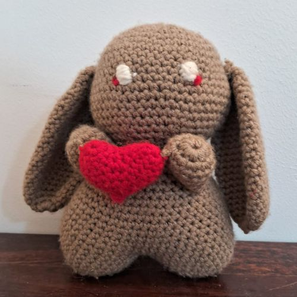
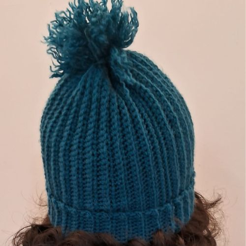
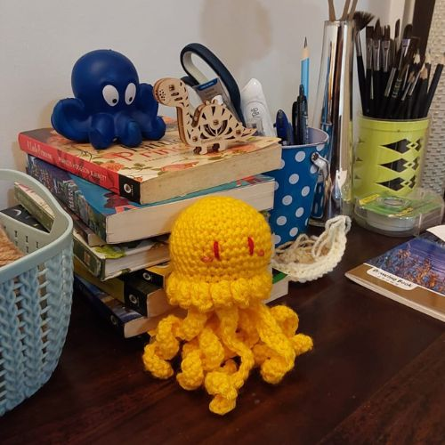
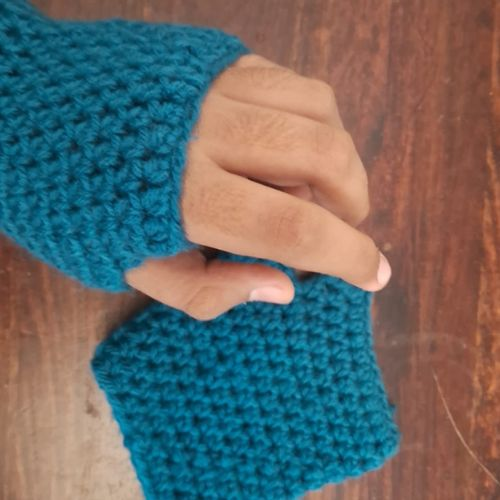
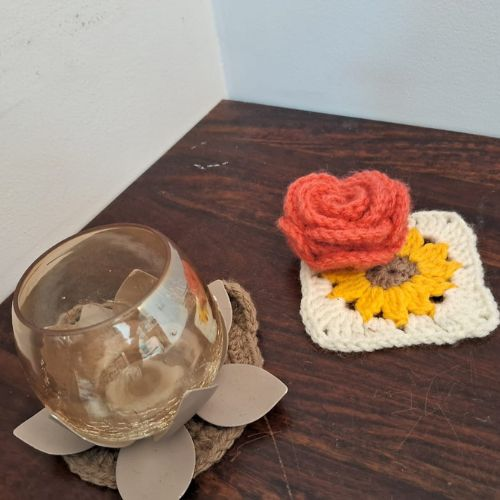
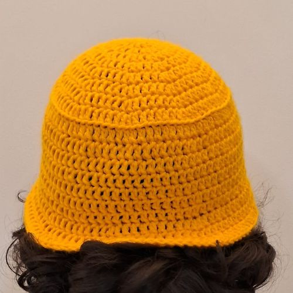
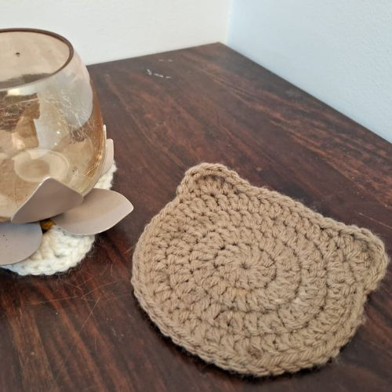
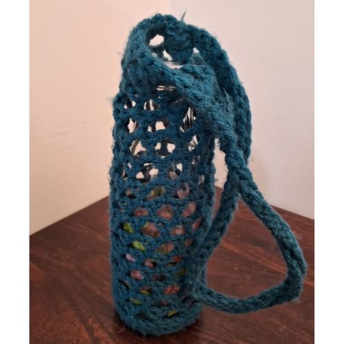

My Products
Bunny Plush
The crochet bunny plush is a charming and cuddly companion, perfect for snuggling or as a delightful gift for anyone. 
Beanie
The crochet beanie is a cozy and stylish accessory that keeps you warm while adding a touch of handmade flair to your winter wardrobe.
Jellyfish plush
The crochet jellyfish plush brings a fun and playful ocean vibe to your collection.
Fingerless Gloves
Crochet fingerless gloves are stylish and cozy hand accessories that provide warmth while allowing freedom of movement for your fingers.
Sunflower Coaster
A crochet sunflower coaster is a vibrant and decorative accessory that protects surfaces while adding a cheerful, floral touch to your home decor.
Bucket hat
A crochet bucket hat is a trendy and versatile headwear option that offers sun protection while showcasing a unique, handcrafted style.
Bear Coaster
A crochet bear coaster is a charming and playful home accessory that adds a whimsical touch while protecting surfaces from drink spills.
Bottle Bag
The crochet bottle bag offers a chic solution for carrying drinks.
